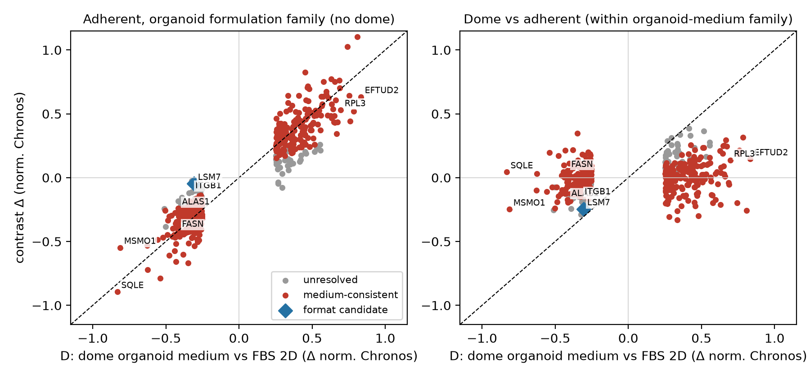
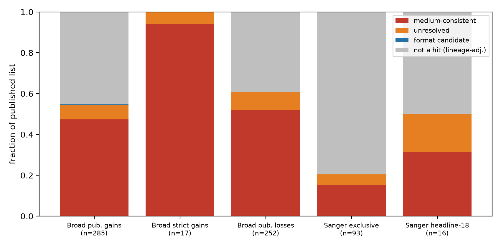
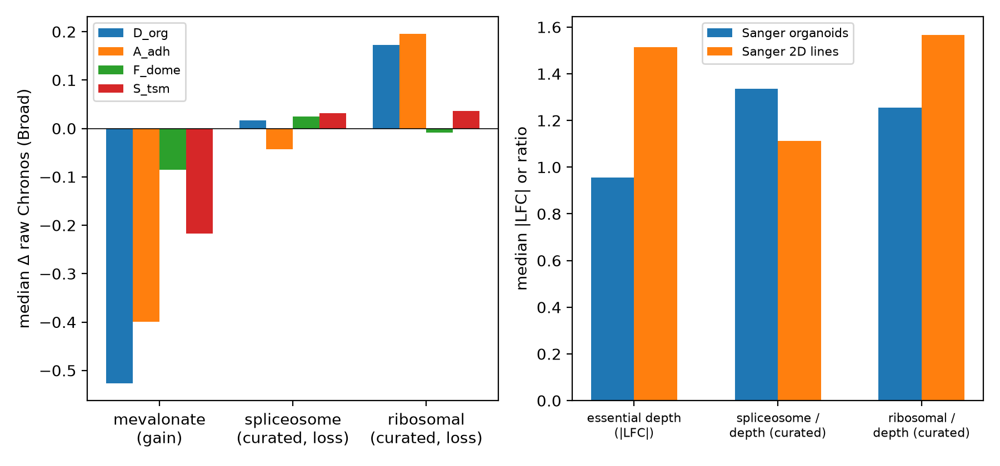

An independent check of the 2026 organoid cancer studies
Is it the cancer,or is it the menu?
Labs now grow patients’ tumours as tiny 3D balls called organoids to find the genes a cancer can’t live without. Those genes become drug targets. But organoids are also fed a special diet with almost no cholesterol. We rechecked two major 2026 studies and found that 85% of the “organoid-only” gene effects also appear when ordinary cells eat the same food.
Each dot is one real geneFollows the foodUnresolvedShape candidateNo real difference
Part 1 · Two differences at once
The shape changed. So did the food.
An organoid differs from a classic flat culture in two ways: its 3D shape and its diet. Flat cultures grow in serum, which is rich in cholesterol and fat. Organoids get a precise recipe with no serum. So when a gene suddenly matters in organoids, is that the shape, or is the tumour just hungry?
The public data hold a natural control: cancer cells grown flat but fed the organoid recipe. Same food, no 3D shape. That one comparison pulls the two apart.
Left: cells grown flat. Right: cells grown as a 3D ball.
Part 2 · The test
85%
follow the food.
Now each dot sits at its real position. Left to right: how differently organoids need the gene. Bottom to top: the same measure in flat cells eating organoid food. Dots on the dashed line behave the same either way, so the 3D shape added nothing. 387 of 456 genes land near it, led by cholesterol-making genes like SQLE.
A consistency check on public data, not proof of cause.
Follows the foodUnresolvedShape candidate
Organoid effect →
Same food, grown flat →
Part 3 · What’s left
Almost nothing points to the shape.
Hide every gene that follows the food and very little remains. One gene, LSM7, leans toward shape, and even that is not significant genome-wide. A small group stays unresolved. These are the best leads, including SCAP, DDX3X and ITGB1 from Sanger’s headline list. Tap one to see its numbers.
Organoids are lab-grown mini tumours made from patients’ cells. Two big studies in Nature (2026) used them to list genes that cancers depend on, as leads for new drugs. But organoids are fed very differently from normal lab cells, and nobody had checked, gene by gene across both lists, how much was just the diet.
85%
What we found
For 387 of the 456 genes that behaved differently in organoids, ordinary flat-grown cells showed the same change once they ate organoid food. The diet, not the 3D growth, explains most of the list. Cholesterol-making genes top it, which fits a recipe with almost no cholesterol.
→
Why it matters
A new cancer drug takes many years and huge sums to develop. A target that only exists because of the lab’s recipe may vanish in a patient, whose blood is full of cholesterol. This audit shows which targets to test first, and a 2-week experiment that would settle it.
17,525
genes checked, each with a verdict and an uncertainty range
85%
of the 456 genes that change in organoids follow the food
1
gene (LSM7) leans toward 3D shape, and it is not significant genome-wide
0.90
how closely food alone tracks the organoid effect (1.0 = perfectly; 95% CI 0.82 to 0.99)
For researchersPer-gene reanalysis of DepMap 26Q3 Chronos (Broad NextGen + Sanger catalogues). Medium-consistent = same-sign adherent-in-organoid-medium effect ≥0.5× the organoid-vs-2D delta. Bootstrap slope 0.90 [0.82 to 0.99]; held-out patients 0.96. Tables, code and review trail in Downloads. Running your own organoid screen? Check your hit list.
Look up any gene
Type a gene name to see whether its organoid effect follows the food, the 3D shape, or neither. Each result opens with a short, simple verdict, then the full numbers and a link to its source record. Below the search, browse all 456 genes that changed.
Try:
Press / to search from anywhere
The list filters come from the two papers: Sanger headline-18 is Sanger’s highlighted list of organoid-specific essential genes, Sanger exclusive-97 its longer organoid-only list, and Broad published gains/losses the genes Broad reported as more or less essential in organoids.
Genes with their organoid effect and verdict. Select a gene for details.
Gene
Verdict
Organoid effectOrganoidD, vs classic 2D
Food onlyA, flat + organoid food
Shape onlyF, dome vs flat
Explained by foodFood %A/D
Confidencebootstrap
How to read the numbers: scores are CRISPR gene effects (Chronos). Negative means cells need the gene more in organoids. “Explained by food” near 100% means flat cells on organoid food show the whole effect without any 3D growth; “100%+” means the food-only effect is even larger. “Confidence” is how often the verdict held when the analysis was rerun 150 times on resampled data.
The whole result in one picture
Each dot is one of the 456 genes that changed. Left to right: how much more or less an organoid needs it. Bottom to top: the same measure in flat cells eating organoid food. Dots on the dashed line show the full effect without any 3D growth. Hover or tap a dot to open that gene.
Follows the foodUnresolvedShape candidate (LSM7)Same effect either way
Check your own hit list
Running your own organoid screen, or holding a shortlist of drug targets? Paste the genes here. You’ll see straight away which ones look like diet effects in the public data, and Muse, Meta’s AI model, explains what that means for your list. The check itself runs in your browser.
Ask the data a question
Type a question in your own words. Muse, Meta’s AI model, works like a research assistant: it decides what to look up in the full table of 17,525 genes, runs those searches itself, and answers in simple, everyday words. You can see each step it took, and every gene name links back to the table.
AI answers can contain mistakes. Muse only sees this audit’s data through its search tools, and every number it quotes should match the table above. Answers are cached so repeat questions load instantly.
What we found
1
Most of the list follows the food, in both directions
What this meansWhen ordinary cancer cells are switched to the organoid diet, they start needing the same genes organoids need. No 3D growth required.
Of 456 genes whose importance differs between organoids and classic cultures, 86% of gains and 84% of losses are medium-consistent: flat-grown cells fed organoid medium show a same-direction effect at least half as large (75 to 82% under conservative robust statistics). The strongest group is cholesterol manufacture (SQLE, MSMO1), followed by fat and heme production. These are exactly the pathways a serum-free, low-fat diet would stress. Gene-expression data show the matching response (cholesterol genes switched on in organoid medium, the classic sign of starvation), and in separate screens using blood-like medium, SQLE moves the opposite way.

Figure 1. Left: flat cells on organoid food against the organoid effect. Points hug the diagonal. Right: 3D dome against flat, both on organoid food. A shapeless cloud near zero, meaning shape adds little. (In this static figure, unresolved genes are grey.)
2
Checking the published target lists
What this meansAbout half of each lab’s highlighted genes look like diet effects. Three of Sanger’s top picks hold up better and deserve a closer look.
Of the Broad catalogue’s published gains present in our audit, 47% (135 of 285) are medium-consistent; 50% (266 of 537) counting gains and losses together; and 87% of the gains that replicate under lineage adjustment. Of Sanger’s “organoid-specific core fitness” headline-18, 8 of 16 replicate here. Five are medium-consistent, four of them on the cholesterol-sensing SREBP pathway (MVD, IDI1, MBTPS1, MBTPS2). Three remain unresolved (SCAP, DDX3X, ITGB1), which makes them the more credible follow-ups. Sanger’s calls are robust in their own assay (median depletion in 70 to 80% of organoids). The open question is the cause, not the quality of the measurement.

Figure 2. How each published list breaks down under our labels. Grey means the gene does not reproduce as a hit under lineage adjustment, so its cause can’t be assigned (this is not evidence that it is real biology).
3
Some genes matter less in organoids, probably because they grow slower
What this meansOrganoids grow slowly, so the cell’s long-lasting protein machines wear out less. That likely makes some “essential” genes look less essential. It’s a good guess, not a proven fact.
Ribosome and spliceosome genes look less essential in organoids. With curated gene sets, only the ribosome set shows a clear whole-complex shift (+0.17 vs +0.03 baseline), present in both labs’ assays after global corrections. Sanger’s organoid screens are globally shallower (essential depth 0.63×). Slower growth means fewer cell divisions, so long-lived protein machines don’t have time to run down. This is the leading explanation, but it is a hypothesis: cumulative doublings are recorded for only 1 of 1,241 Broad screens, so this data release can’t settle it.

Figure 3. Left: median shift of curated gene sets by comparison (Broad). Right: Sanger essential depth and depth-scaled ribosome and spliceosome ratios. The spliceosome effect vanishes after scaling; the ribosome effect remains.
4
One cheap experiment would settle it
What this meansGive the organoids their cholesterol back. If the “organoid-only” weak spots disappear, they were caused by the diet.
Add LDL cholesterol back to organoid medium. If the sterol dependencies are starvation, sensitivity to SQLE inhibitors and statins should collapse (at least a 5× potency shift) while genuine candidates like ITGB1 stay put. We agreed in advance what counts as failure: if sensitivity survives LDL repletion in 3 or more of 4 models, our interpretation is wrong. The full protocol is in the wet-lab proposal. It takes about two weeks and needs no new CRISPR screen.
How this was made
A changelog, mistakes included. Muse, Meta’s AI model, ran the research loop under human direction and did much of the analysis together with Codex. A separate AI reviewer checked the work in five rounds before release. Muse also wrote the first draft of this site, and Claude polished it.
2026 · The catalogues
Two Nature papers map organoid weak spots
Broad (Neiswender et al.) and Sanger (Herranz-Ors et al.) publish genome-wide CRISPR maps for patient-derived organoids and nominate organoid-specific drug targets. Broad’s own 1,000-gene side experiment already showed that SQLE and MSMO1 respond to the medium and that 3D format mattered little under serum-free conditions. Nobody had extended that check to every gene in both catalogues.
The design
Separate the food signal from the shape signal
The public data already contain the controls: organoid medium grown flat (food without shape), domes against flat cultures on the same food (shape without food), and an unrelated serum-free brain-cancer diet. We corrected for the two CRISPR toolkits used (measured from 22 models screened with both), the cancer-type mix, and screen strength, then held out whole patients to check the answer on unseen data.
Round 1
First pass: 85% food, 0% shape
The headline result appeared on the first pass, along with a large apparent “spliceosome collapse” (+0.9). The second result did not survive checking.
Self-correction
The spliceosome effect that wasn’t
Swapping a small hand-picked gene panel for the full curated sets shrank the spliceosome effect from +0.90 to +0.02. The small panel had been built from genes already known to change, which exaggerated the effect. The ribosome effect survived. The spliceosome story was demoted everywhere, including the abstract.
Triangulation
Three separate lines of evidence agree
Gene-expression data show the cholesterol-starvation mirror image (+0.36 vs −0.38). Sanger’s separate assay shows the same cholesterol gain (percentile 0.099 vs 0.394). Blood-like medium screens from 2021 move SQLE the opposite way. Different labs and methods point the same way.
Adversarial review
Five rounds against a skeptical reviewer
An independent AI reviewer audited the code and claims and recomputed results from source. It found real faults every round: contaminated calibration, an impossible statistical test for shape effects, a bootstrap that estimated the wrong quantity, and a bug corrupting one gene’s stability score. Each was verified, fixed and re-reviewed until the reviewer scored the work 95/100. The scores below come from that reviewer, a different AI system from the one that ran the analysis, so treat them as a code audit, not peer review.
Novelty audit
“Hasn’t somebody done this?” 230+ web searches later
A separate deep-research run hunted for prior work. Verdict: partly. The general ideas have real precedents (2019 to 2026, cited below). One web report claiming similar scope turned out to carry a fabricated arXiv ID, and a commentary nine days earlier asked the same question without numbers. The catalogue-wide, per-gene audit itself appears to be new. We downgraded the title to match: an audit, not a proof of cause.
This site
Muse as a research assistant you can question
The gene summaries, the hit-list check and the “Ask the data” box all use Muse. For questions and lists it works as an agent: it chooses tools that search the full 17,525-gene table, reads the rows they return, and only then answers. You can see each step it took. It runs on our server, and every gene it names links back to the table.
Next
A lab experiment
We have pushed the public data about as far as they go, and checked the results twice. What remains is a two-week experiment: add the cholesterol back. The proposal, with failure criteria agreed in advance, is in Downloads.
Methods
In simple terms
For every gene we ask four questions of the public data. (1) Does its importance change in organoids compared with classic cultures? (2) Does the same change happen in flat-grown cells fed organoid medium? (3) Is anything left over when comparing 3D domes with flat cultures on the same food? (4) Does an unrelated serum-free diet do something similar? If (2) reproduces most of (1) and (3) is small, the gene follows the food (technically, medium-consistent). The mirror-image pattern makes it a shape candidate (format candidate). Everything else is unresolved. These labels come from observational data and are not proof of cause. Proof needs the add-back experiment.
Technical details
DepMap 26Q3 Chronos gene effects (PassesQC screens, Avana + Humagne-CD), development patients only for all calibration, filtering and imputation. Per-gene library offset from 22 development FBS models screened with both libraries (all Avana screens are FBS). Per-gene OLS on model-mean Chronos with lineage dummies; Benjamini-Hochberg q per contrast; HC3 robust SEs shipped and used for sensitivity. Hits: D q<0.01 and |Δ|≥0.25 (dynamic-range-normalized scale primary; raw concordant). Medium-consistent: same-sign adherent ratio ≥0.5, nominal p<0.05, 90% delta-method CI excluding 0, format not dominant under mirror criteria; strict-FDR variant released as flag_fdr. Joint bootstrap (B=150) shares one model resample between calibration and analysis; the identity replicate reproduces point flags exactly. Held-out evaluation is fully disjoint (25 reserved-patient domes vs 78 reserved-patient FBS controls). Common-support sensitivity restricts to the six lineages with adherent comparators (38 domes): slope 0.89. Humagne-only sensitivity filters at screen level (7 FBS controls, r=0.78). Sanger: supplementary tables 4/5/6 and cell-line EssMatrix; within-model percentiles are primary across differently processed matrices. Expression: Omics TPM logp1 mapped by ModelConditionID. HPLM: Rossiter et al. Table S1 scaled gene scores. Full code is in the release bundle under Downloads.
Limitations
Only 9 flat comparator models, covering 6 of 9 cancer types, on mixed (not identical) recipes, so each gene’s verdict carries real uncertainty. Use the confidence (bootstrap) values. Differences in how models were derived or selected are not ruled out by lineage adjustment. Library handling rests on 22 dual-screened models. Cumulative doublings are recorded for 1 of 1,241 Broad screens, so the slower-growth explanation is untested. We did not re-screen anything; all inference comes from the catalogues’ public data. This site claims an audit with measured consistency, nothing more.
Sources & citing
Every number on this page traces to a public dataset below. Each gene’s detail panel links straight to its record in the DepMap Portal.
DepMap 26Q3
Screen gene effects (Chronos), screen maps, model conditions, expression
Medium-associated dependencies and corrections that predate this audit
Lagziel 2019 doi ·
Pacini 2021 doi ·
Dempster 2019 doi ·
Liang 2025 doi ·
Zaidi & Sawyers 2026 doi
Cite this audit
It's the Medium: a genome-wide medium-consistency audit of the 2026 organoid
dependency catalogues. Unpublished draft technical note, 2026 (not yet posted
as a preprint). https://www.itsthemedium.com
Data: medium_attribution_v2 tables (v2r2), release bundle v1.
BibTeX
@misc{itsthemedium2026,
title = {Most reproduced "organoid-specific" cancer dependencies are
consistent with culture-medium effects: a genome-wide
medium-consistency audit of the 2026 organoid dependency catalogues},
year = {2026},
note = {Unpublished draft technical note},
url = {https://www.itsthemedium.com}
}
Citing one gene? Open it above and use “Copy gene citation”. It includes the exact table version and values so others can reproduce your number.
Downloads
Manuscript (draft PDF, 7 pages): the full technical note with figures. Unpublished draft, not yet posted as a preprint.313 KB
Release bundle v1 (ZIP): all analysis code (Python), the adversarial review trail, supplementary tables and manuscript source.11.5 MB